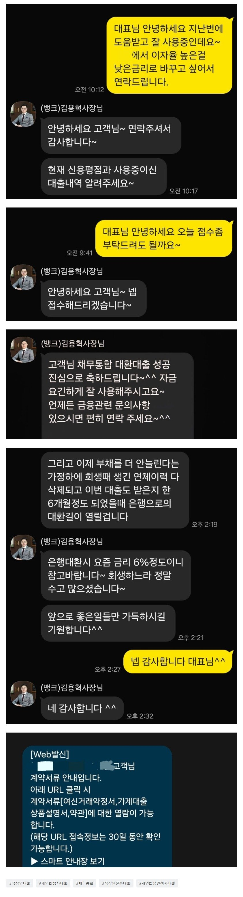

[채무통합] 회생면책이 되어서 채무통합을 하면 좋을거같아 문의를 드렸는데 너무 친절하게 잘 알려주셔서 대출 진행할수 있었고요 덕분에 잘 사용하도록 하겠습니다. 꼭 뱅크앤론에서 도움많이 받으셨으면 좋겠습니다.
재직형태: 직장인
재직기간: 10개월
사대보험 가입유무: 유
소득:연 4100만원
신용등급: KCB 612점
채무내역: 저축은행 2건 1300 + 1900 만원
필요서류: 신분증 등본 원초본 건강보험 득실확인서
건강보험 납부확인서
개인회생을 3년전에 진행하면서 뱅크앤론 도움으로
회생자 대출을 잘 사용했고요 얼마전에 회생면책이 되어서 신용점수가 회복중이었고 채무통합을 하면
좋을거같아 문의를 드렸는데 너무 친절하게 김용혁 이사님과 이현섭과장님께서 잘 알려주셔서 대출 진행할수 있었고요 덕분에 잘 사용하도록 하겠습니다 카페 회원님들도 꼭 뱅크앤론에서 도움많이 받으셨으면 좋겠습니다.

https://cafe.naver.com/cityman88/311528